PLC & LabVIEW
Building reliable automation systems through control logic, signal processing, data acquisition, simulation, and hands-on engineering.
Automation / AI / Human-centered technology
Third-year Computer & Robotic Engineer building practical automation systems with PLC, LabVIEW, IoT, and CAD.
01 / About
 Engineer / Creator
Engineer / Creator
I am a third-year Computer & Robotic Engineer at Bangkok University, focused on automation systems, industrial robotics, PLC programming, IoT, and CAD design.
My work started with IoT circuits designed in KiCad, microcontrollers, sensor integration, and 3D printing. It grew into robotics, computer vision, PLC logic, LabVIEW, sound design, and music production. This mix gives me a practical way to approach real-world problems: understand the system, work closely with people, and build something that can be tested in the real world.
Through national competitions, I have learned to solve unfamiliar technical problems under pressure while staying collaborative and open to feedback. Passionate about PLC programming and NI LabVIEW, I seek an engineering internship to solve real-world automation and robotics challenges.
02 / Toolkit
Building reliable automation systems through control logic, signal processing, data acquisition, simulation, and hands-on engineering.
Turning an idea into a form that can be tested, improved, and built.
Building atmosphere and emotion with the same attention to detail as a circuit.
Fast learning, practical problem-solving, ethical decision-making, communication, and teamwork under pressure.
03 / Selected work
A collection of competitions, builds, and experiences that shaped how I solve problems.
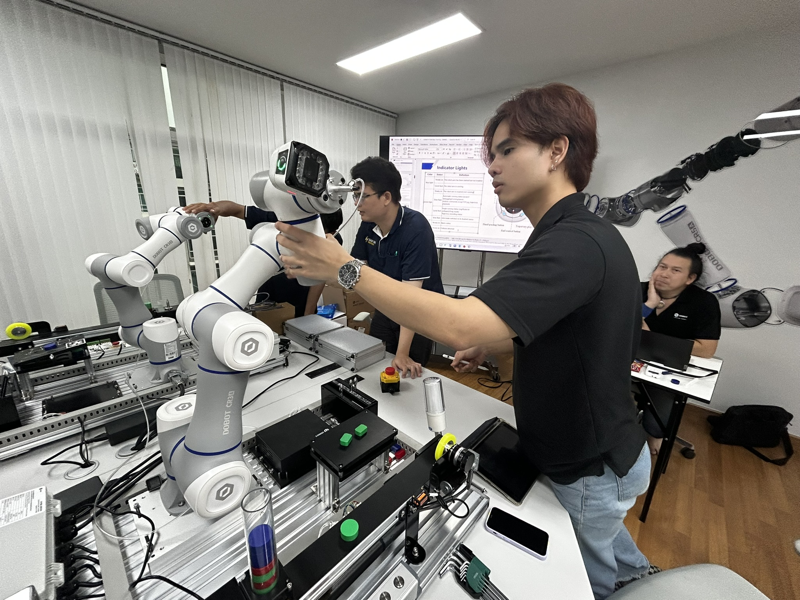
Dobot Thailand / DobotStudio Pro
A hands-on training experience that sparked my passion for robotics and industrial automation. I learned to program and establish control logic for the Dobot CRA robotic arm through Block Diagrams, while developing a stronger understanding of robot mechanics, kinematics, and hardware limitations. The training also taught me the critical do's and don'ts of operating industrial robotic arms, helping me prevent system errors and work safely around automated machinery.
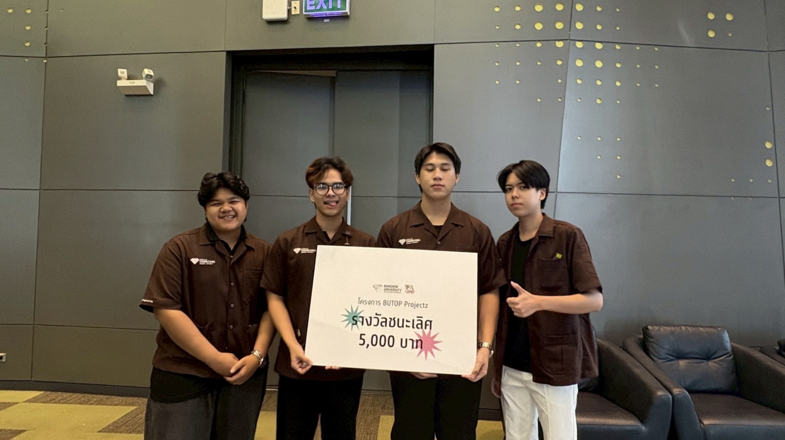
BUtopProjectz / Winner
An award-winning all-in-one health kiosk that translates raw sensor data into personal, actionable goals. I integrated a microcontroller with a VL53L1X ToF height sensor, HX711 load cell, GY-906 contactless temperature sensor, and MAX30102 pulse oximeter. A secure QR flow syncs results with the MyHealth Station app for BMI, BMR, TDEE, and water-intake recommendations.
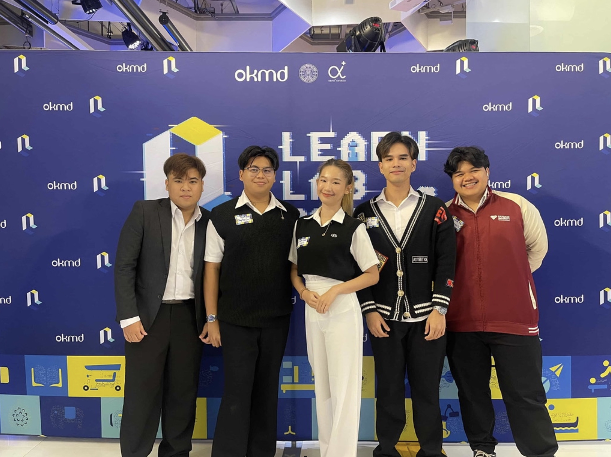
Learn Lab 2025: Soft Power Beyond AI
A smart photobooth built to make traditional Thai Likay culture feel playful and current. As Backend Developer and an ideation lead, I supported stable data processing and AI integration for real-time costume transformation and pose matching, while researching the audience and validating the product direction.
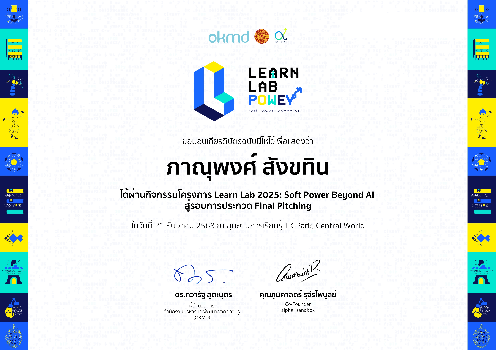
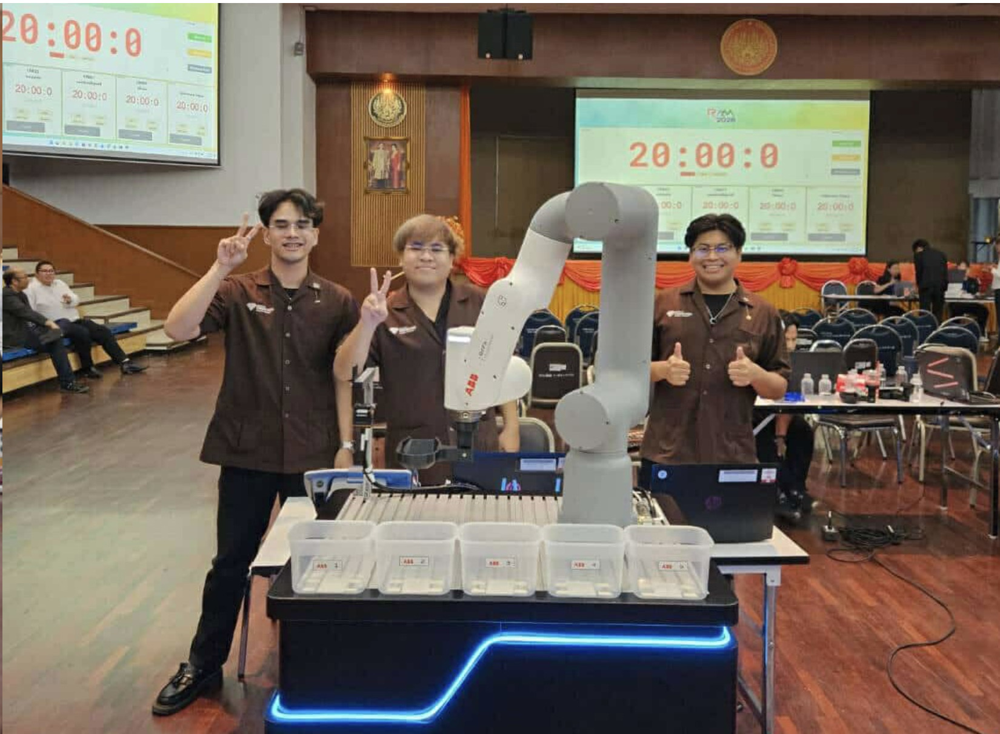
ABB Automation & AI Competition
Competing against more than 40 teams, I managed the robotic positioning system in a 20-minute, no-practice environment. I translated computer-vision output into precise X, Y, Z coordinates and planned safe paths so the robotic arm could reach, grasp, and sort target objects.
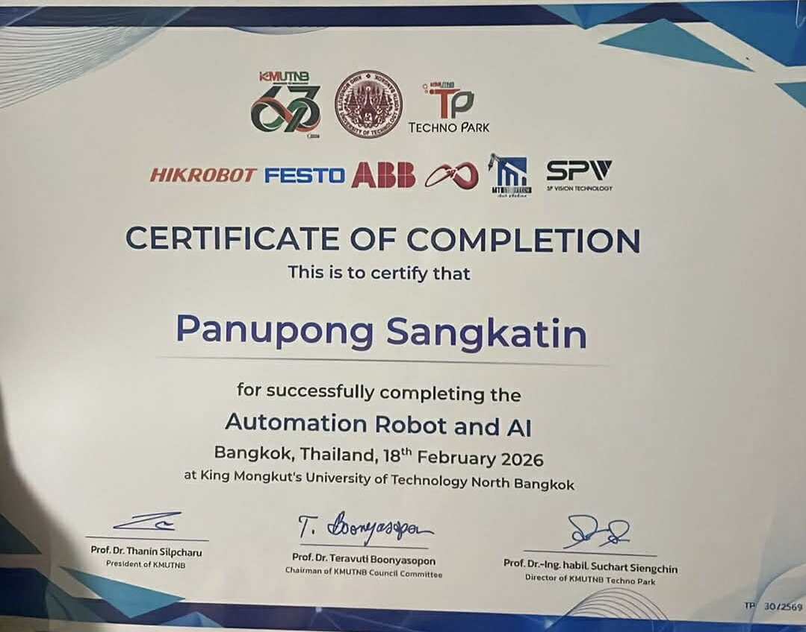
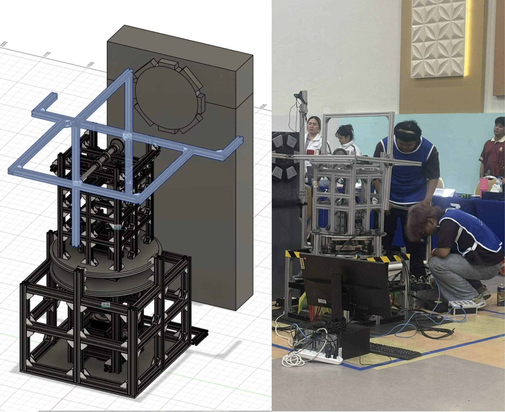
TPA PLC Competition 2026
With Team Bananacat, I led CAD design in Autodesk Fusion, balanced strength and weight with an aluminum-profile structure, integrated home-setting limit switches, and programmed precise punching sequences in GX Works 3. The robot responded to a blue-light target while following competition rules.
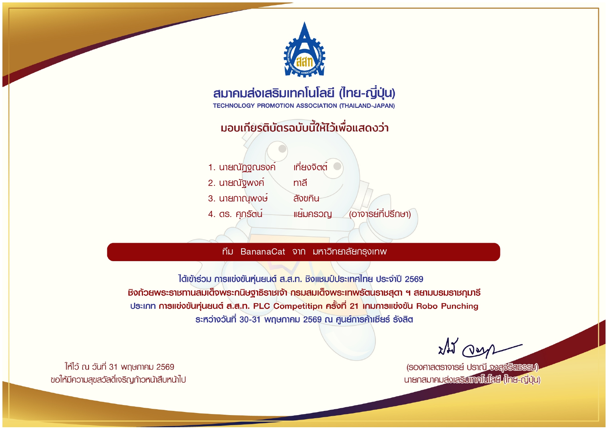
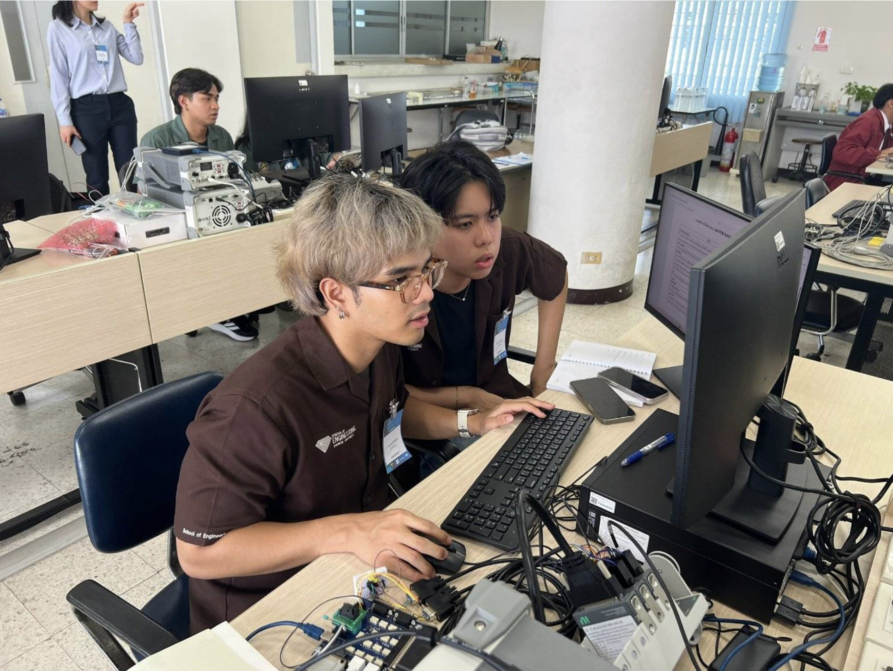
Signal processing competition
Placed 5th by modifying existing block diagrams under pressure and using NI LabVIEW tools for signal processing, measurement, data acquisition, system testing, and simulation.
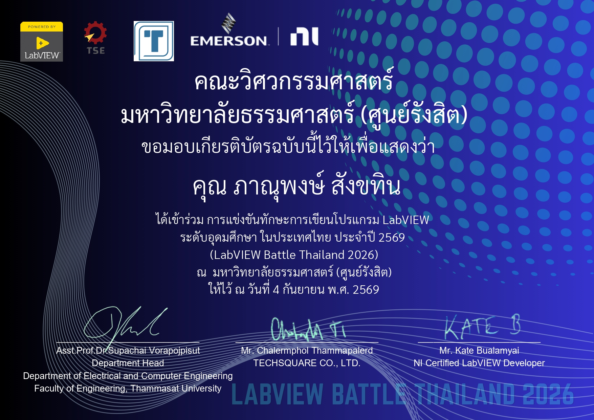

Department of Skill Development
Assisted in teaching the application of AI tools such as Google Flow, Leonardo, and Gamma in multimedia for career development in Kanchanaburi. I specifically instructed participants on creating storyboards and generating videos from them. This experience significantly strengthened my ability to carry out assigned tasks, improved my teamwork, and enhanced my communication skills, especially in adapting my language effectively for the audience.

Teaching Assistant (TA)
Served as a Teaching Assistant for students competing at IMPACT Muang Thong Thani, mentoring them on controlling TurtleBots using PID controllers. I instructed students on hardware assembly, motor soldering, and behind-the-scenes mechanical setups. This experience enhanced my teamwork and task delegation skills to maximize the team's potential and efficiency. It also significantly refined my communication abilities, including voice tone control and adapting language levels for different audiences.
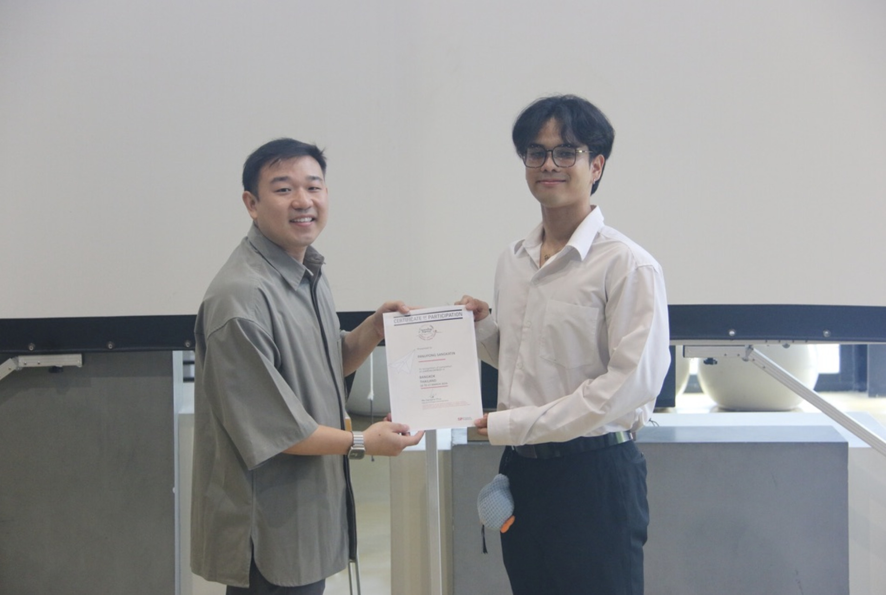
Bangkok University × Singapore Polytechnic
Led the Thai team and worked as an interpreter and communicator on a community project revitalizing Ing Nam Sam Khok Market in Pathum Thani. The experience strengthened my English confidence, cultural awareness, and ability to move a team toward a shared goal.
04 / Contact
I am open to internship opportunities and conversations about engineering, automation, creative technology, and ambitious projects.